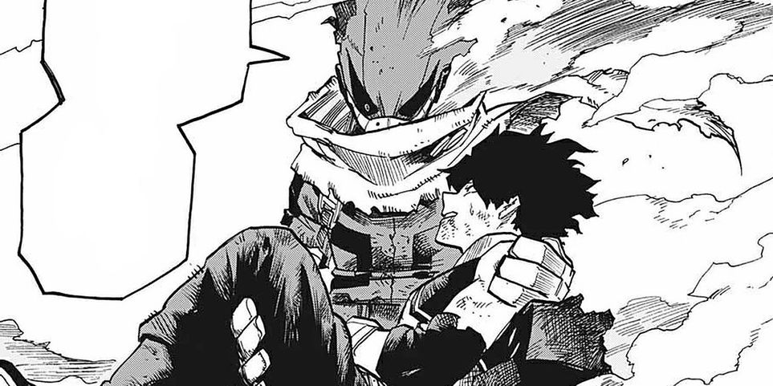
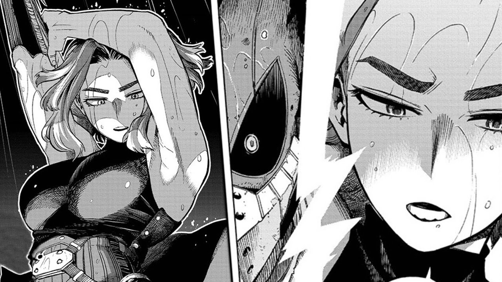

Pahlawan Deku yang baru saja lulus akademi pahlawan di UA berhasil menyelamatkan kota.
Di Boku no Hero Academia chapter yang lalu Deku masih bertarung melawan Lady Nagant. Setidaknya Deku gak cuma jadi sasaran tembak tapi juga bisa ngelawan balik. Di tengah pertarungan diperlihatkan masalalu Lady Nagant yang dulunya adalah pahlawan tapi karena sistem yang buruk membuat kepercayaannya akan sistem pahlawan hancur. Gimana kelanjutannya? Yuk masuk kepembahasannya.
Terlihat kilas balik Overhaul atau Chisaki yang mau bantu Lady Nagant karena dijanjikan bisa ketemu sama bosnya yang dulu. Itu alasannya muncul dan buat konsentrasi Deku buyar. Lady Nagant pingin manfaatin perasaan khas pahlawan yang pingin nyelametin semuanya. Dia nembak Overhaul dan berharap Deku bingung ingin menyelamatkan dia atau enggak sehingga Lady Nagant punya kesempatan dalam kelengahan Deku. Ternyata rencana itu gak berjalan lancar. Deku makek quirk generasi ketiga Fajin, quirk ini membuatnya bisa mengeluarkan energi kinetik dengan mengkombinasikan quirk dan energi OFA Deku sekarang bisa bergerak secepat all might dan nyelametin Overhaul tanpa mikir panjang.
Tidak hanya nolong Chisaki, Deku juga nyerang Lady Nagant dan bikin tangan rifflenya hancur. Dia yang udah gak punya tenaga jatuh dari langit tapi sebelum mencapai tanah Deku menggenggam tangannya dan minta Lady Nagant buat kembali ke jalan pahlawan. Lady Nagant tersenyum sepertinya hatinya tergerak ngeliat kebaikan Deku tapi sepertinya hal itu udah diantisipasi sama si jahat AFO tiba tiba tubuh Lady Nagant meledak dan hangus sebelum dia akhirnya jatuh ke tanah dan ditangkap Hawks yang kebetulan udah tiba dilokasi.
Yosh minnaaaa berakhir sudah pembahasan chapter ini. Kebaikan Deku gak usah ditanya lagi dah ya hahaha. Sebelum Lady Nagant nembak dia udah pingin nyelametin Chisaki. Itu yang bikin rencana Lady Nagant gagal. Diakhir pertarungan pun kayaknya Lady Nagant luluh dan mau berganti pihak tapi gara gara AFO dia jadi luka parah. Mimin harap dia bisa bertahan tapi kayaknya tipis kemungkinan karena dia udah gosong dan kayaknya sekarat.